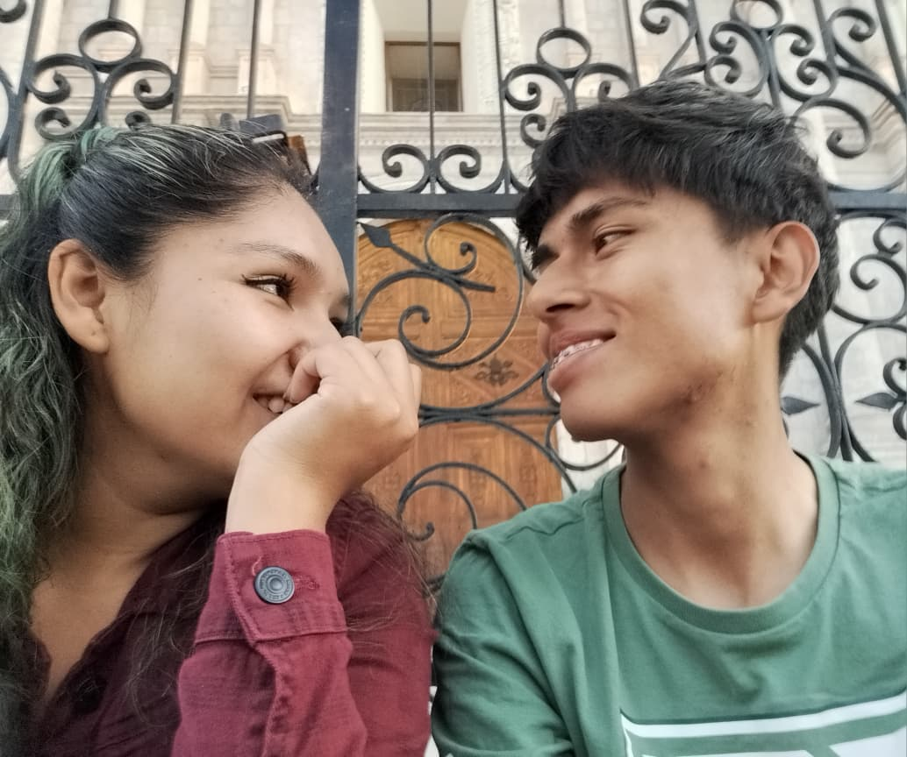

Antes de leer la carta presiona la foto :D
Yamicita de mi vida, elegí esta canción ya que sé que te gusta mucho esta película y a mi me gustas mucho tú, asi que por regla de tres simple, esta música también me gusta mucho :D (Además, es una canción que me recuerda a ti cada vez que la escucho, y nunca cambiará eso porque mientras escribo esta carta, la música suena una y otra vez jajaja).
Quiero aprovechar esta oportunidad para expresarte lo mucho que te quiero y lo importante que eres para mí. Eres la luz que ilumina mi camino, la razón de mis sonrisas y el latido de mi corazón. Cada momento a tu lado es un regalo que atesoro profundamente.
Desde el primer momento que te vi, supe que eras especial. Tu sonrisa ilumina mis días más oscuros y tu voz es la melodía que acompaña mis sueños.
Cada latido de mi corazón lleva tu nombre, cada estrella en el cielo me recuerda lo brillante que es tu alma. Te quiero con todo lo que soy y todo lo que seré.
Ojalá pudiera confesarle al mundo entero esta culpa que me quema, para que veas la inmensa pena que siento por el sufrimiento que te provoqué. Entiendo que nunca habrá disculpa que alcance, ni será fácil que vuelvas a entregarme tu fe. Sin embargo, si la vida me permitiera volver a coincidir contigo, así sea en otro tiempo o en otra vida, te pediría que lo intentáramos una última vez. Hoy sé perfectamente cuáles son los errores que jamás volvería a repetir.
También quería decirte que aunque no pueda estar a tu lado en este momento, siempre estaré aquí para ti, apoyándote y queriéndote desde la distancia. Te deseo todos los éxitos en esta semana de exámenes, sé que eres capaz de lograrlo todo y más.
Junto con la cartita te estoy dejando tu chocolate favorito, espero que te guste el detalle. (Si es que no hay chocolate para ti, es porque se lo comieron alguien de tu casa jajaja, pero igual te quiero mucho <3)
Eres, serás y siempre serás... MI TODO ❤️